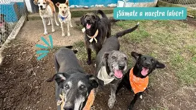

Programa de Adopción Responsable

Este programa busca encontrar hogares definitivos para perros y gatos rescatados. Promovemos la adopción consciente y el compromiso a largo plazo.
¿A quién está dirigido?
A personas y familias que quieran adoptar una mascota y estén dispuestas a brindarle cuidado y amor.
¿Cómo participar?
- Completar el formulario de adopción.
- Entrevista con nuestro equipo.
- Visita al hogar.
- Entrega del animal.